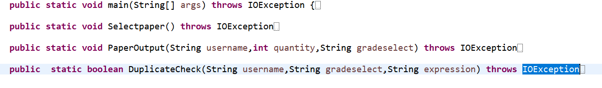
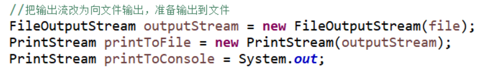
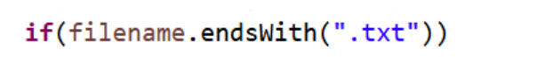

【写在前面】这篇博客是软件工程这门课中要求结对编程。规则是这样的：结对的两个人，分别看对方个人项目代码，2天时间内，分析对方代码优点和缺点。我是来分析凌嘉文同学的代码。
先写一下个人项目中的项目需求，这样大家好理解：
题目数量的有效输入范围是“10-30”（含10,30，或-1退出登录），程序根据输入的题目数量生成符合小学、初中和高中难度的题目的卷子（具体要求见附表）。同一个老师的卷子中的题目不能与以前的已生成的卷子中的题目重复（以指定文件夹下存在的文件为准，见5）；
在登录状态下，如果用户需要切换类型选项，命令行输入“切换为XX”，XX为小学、初中和高中三个选项中的一个，输入项不符合要求时，程序控制台提示“请输入小学、初中和高中三个选项中的一个”；输入正确后，显示“”系统提示“准备生成XX数学题目，请输入生成题目数量”，用户输入所需出的卷子的题目数量，系统新设置的类型进行出题；
附表-1：账户、密码
|
账户类型 |
账户 |
密码 |
备注 |
|
小学 |
张三1 |
123 |
|
|
张三2 |
123 |
|
|
|
张三3 |
123 |
|
|
|
初中 |
李四1 |
123 |
|
|
李四2 |
123 |
|
|
|
李四3 |
123 |
|
|
|
高中 |
王五1 |
123 |
|
|
王五2 |
123 |
|
|
|
王五3 |
123 |
|
附表-2：小学、初中、高中题目难度要求
|
|
小学 |
初中 |
高中 |
|
|
难度要求 |
+,-,*./ |
平方，开根号 |
sin,cos,tan |
|
|
备注 |
只能有+,-,*./和() |
题目中至少有一个平方或开根号的运算符 |
题目中至少有一个sin,cos或tan的运算符 |
需求说明：这里可能有些点大家会有歧义，这里做出解释：用户在输入账号、密码后（例如张三1 123，则默认出小学题），先按默认出题。出完题后如果用户切换类型，则还是在该账号下出题。例如我输入张三1 123，则默认出小学题，然后切换为高中，则出高中题，但是最后的txt文档是保存在张三1这个文件夹下的。至于怎么区分高中、初中、小学题，老师后来说，要在用户文件夹下再创建文件夹，他们分别保存高中、初中、小学的题。
优点：
1.总体代码量270行（竖大拇指）。
2.思路简洁明了，实现了各个方法之间松耦合，但是方法内部紧耦合的基本要求。
3.变量命名简单易懂，注释写的恰到好处。
缺点：
1.大佬对于加括号的理解有些问题，代码中只有小学能加括号，而且只有一个操作数才加括号，正确的理解是这样的（这个理解已经求证老师了，是正确的）：高中式子里可以有括号、根号、平方、+ - * ÷，但是必须要有三角函数，初中里可以有括号、+ - * ÷，但是必须要有根号和平方。
2.在保存文档和读写文档的时候用到的是绝对路径而不是相对路径，这增加了用户找生成文件的难度。
3.考虑到可能会有IO异常的抛出，但是只有throws，并没有相应的处理。
接下来开始具体分析大佬的代码，以及他的各个功能模块之间的连接方式，由于是别人的代码，所以这里并不放上源代码了。之后我会更新自己的个人项目代码以及详细思路，敬请期待。
首先，他用了这四个方法来具体描述这个项目，它们如下图所示：

方法的作用分别是：
main方法：用户登录，密码验证，调用其他功能方法；
Selectpaper方法：选择题目难度、数量；
PaperOutput方法：试卷生成以及输出至txt文档中；
DuplicateCheck方法：查重功能。
1.main方法实现原理：
1）利用while循环来实现登录功能，如果用户输入的用户名不在username数组中，并且密码不正确，那么就一直执行while循环。
2）当登录成功后，从main方法中调用Selectpaper方法，开始生成试卷。
2.Selectpaper方法实现原理：
1）通过判断用户输入的字符长度，来判断用户是切换为XX，还是继续输入（这点写的很好）。
2）通过while循环，来判断用户输入题目数量是否满足在区间[10,30]中的要求。
3.PaperOutput方法实现原理：
先按常理来判断是否有文件存在，如果没有就新建文件夹，这里用的是绝对路径建的，需要后续迭代改进。然后输出流他是这样写的：

我认为这是一个很好的写法，值得我借鉴学习（因为自己文件输出这块掌握的不是很好）。
有关生成题目，他的思路和我的思路很像，但是更为抽象和简单。大致总结一下：每一个式子都是由连接项和数字构成，其中数字可以带根号、开平方、或者前面加个三角函数，连接项的话就是+ - * ÷ ，所以，只需要根据用户选择的难度，将连接项和数字组合起来就可以了。是不是思路既简单又清晰！为大佬鼓掌！
4.DuplicateCheck方法实现原理：
这个方法就是用来查重的，所以主要就实现一下读取文件和查找就ok了。大佬这里还用了筛选文档类型，这让我眼前一亮：

虽然说因为保存的文档都是txt类型的文档，不存在有其他类型的文档，但是我觉得这种习惯很好，值得学习，让代码健壮性更好。
在查找的时候是用到了indexof方法，这个方法不知道的同学可以去自行百度学习。
这次看大佬的代码，虽然有功能有些缺陷，但是对我也有了提升。首先传参这块我觉得我就有缺陷，我虽然是声明了成员变量，但是在后面调用方法的时候，我还是选择了传参，所以就显得我的成员变量并没有发挥极致的作用。而且我的思路也有点混乱，代码很冗长，我将三种难度的试卷生成分开写了，这样就不如大佬整合在一起写要好。总的来讲还是自己的抽象和总结能力有待提升。这次编程让我受益匪浅呀。